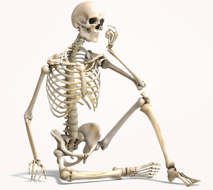
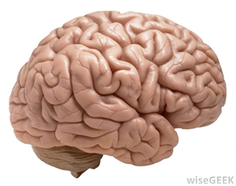

WORKOUT
So you need proof, huh?
Scroll down to begin.
NEED PROOF?
The Department of Health and Human Services (HHS) late this year released its new Physical Activity
Guidelines for Americans, calling for adults between the ages of 18 and 64 to exercise moderately (such
as
brisk walking or water aerobics) for at least two hours and 30 minutes or vigorously (running, swimming,
or
cycling 10 mph or faster) for at least an hour and 15 minutes weekly.
The longer, harder and more often you exercise, the greater the health benefits, including reducing the
risk
of diseases such as cancer and diabetes, according to the recommendations, which were based on a decade
of
scientific research.
Studies have shown that people who engage in the amount of exercise recommended by the feds live an
average
of three to seven years longer than couch potatoes, according to William Haskell, a medical professor at
Stanford University who chaired the HHS advisory committee. But how exactly does exercise accomplish
this?
And what about claims by naysayers that exercise not only isn't healthy but may actually be bad for you?
Is
there any truth to them?
Good for the heart and blood vessels
In the past decade or so, various studies involving thousands of participants have shown that workouts
lower the risk of heart disease. "Exercise has a favorable effect on virtually all risk factors of
cardiovascular disease," says Jonathan Meyers, a health research scientist at the Palo Alto Veterans
Affairs Health System in California. The reason, he says: when a person exercises, the heart muscle
contracts forcefully and frequently, increasing blood flow through the arteries. This leads to subtle
changes in the autonomic nervous system, which controls the contraction and relaxation of these vessels.
This fine-tuning leads to a lower resting heart rate (fewer beats to pump blood through the body), lower
blood pressure and a more variable heart rate, all factors that lower the risk of developing
cardiovascular disease, he says.

Meyers says that exercise also limits inflammation associated with heart trouble, such as
arteriosclerosis or hardening of the arteries around the heart, which may lead to heart attacks. Many
recent studies have focused on C-reactive protein, a marker of inflammation. Meyers says that research
showed that sedentary folks who embarked on three- to six-month exercise programs, on average,
experienced a 30 percent dip in their C-reactive protein levels – about the same drop as someone given a
statin (a cholesterol and inflammation-lowering drug). In other words, in many people, exercise might be
as effective as an Rx in tamping down inflammation, one of the key risk factors for cardiovascular
disease.
Exercise also boosts cardiovascular health by decreasing the amount of plasma triglycerides—fatty
molecules in the blood that are associated with plaque build-up in the arteries— notes Haskell. What's
more, he adds, physical activity helps reduce the particle size of low-density lipoprotein (LDL) or
so-called bad cholesterol in the blood, and increase amounts of high-density lipoprotein (HDL), aka good
cholesterol, which translates to less artery clogging.
But exercise may not have the same effect on every person's cardiovascular system, notes Arthur Leon,
chief cardiologist at the University of Minnesota's Heart Disease Prevention Clinic in Minneapolis. "On
average, there is a response but there is great variability, and that variability runs in families," he
says. Take, for example, HDL cholesterol. Most broad studies show physical exercise leads to up to a 5
percent increase in HDL levels, but a closer examination shows that the percentages vary from zero to 25
percent, depending on the study subject, he says, noting that only about half of the population seem to
experience HDL increases as a result of exercise.
Less cancer
Several studies (including the ongoing federal National Health and Nutrition Examination Survey)
following thousands subjects for several years, show that regular exercise lowers the risk for certain
cancers, particularly breast and colon cancer, says Demetrius Albanes, a researcher at the National
Cancer Institute in Bethesda, Md. Scientists have yet to pinpoint the mechanisms involved but have come
up with several plausible explanations.
"Physical activity beneficially affects body weight," says Albanes, noting that leaner people have lower
circulating levels of insulin, a hormone produced by the pancreas that helps cells absorb glucose, their
primary energy source. Obese and overweight people, are more likely to develop insulin resistance, a
condition in which the cells no longer respond to the hormone and absorb glucose. When this happens, the
pancreas produces greater amounts to compensate, flooding the bloodstream with insulin; high levels of
insulin in the blood have been linked to [some types of] cancer. "Insulin is essentially a growth
hormone," Albanes says. "Insulin could create new tumors by increasing rates of cell division, or it
could just make small tumors grow."
Albanes says that exercise may also ward off cancer and other diseases because it appears to beef up the
body's immune system. Exercise may also help reduce levels of the female hormones estrogen and
progesterone in the blood, potentially also lowering the risk of developing breast and uterine cancers
linked to high levels of those hormones.
Despite the apparent link between physical exercise and lower odds of cancer, Albanes acknowledges that
there could be other factors at work. "[Because] most of these studies are not controlled trials, it
could be some other lifestyle factor [that helps explain the lower cancer risk], " he says, noting that
people who exercise may also eat healthier diets.
Builds strong bones
Robert Recker, an endocrinologist and current president of the National Osteoporosis Foundation in
Washington, D.C., says research indicates that moderate exercise increases and maintains bone mass and
reduces the risk of osteoporosis. "The most compelling evidence," he says, "is that if you don't do
anything, your fracture risk is much greater."

Like muscles, bones become stronger when forced to bear more weight than normal. "The skeleton is a
smart structural organ and knows how much load [force] is being put on it," Recker says. "Pick up a pail
of water, and you're loading your arm, your shoulder, your spine, your legs and your hips." That means
muscles are contracting, exerting forces on the bones supporting those body parts. This force stimulates
the bone to maintain or even build new tissue. But scientists have yet to figure out why. "That's a
focus," he says, "of incredibly aggressive research."
Recker says that researchers speculate, however, that it has to do with exercise triggering osteocytes
(the most mature bone cells) to instruct bone-building cells called osteoblasts to increase bone
formation.
Wards off diabetes
According to Gerald Shulman, a cellular and molecular physiologist at Yale University School of Medicine
in New Haven, Conn., exercising may prevent and even reverse type 2 diabetes.
Diabetes type 2 is a disease in which the body begins to ignore or fails to produce enough insulin (a
condition called insulin resistance). If muscles and other tissues cannot absorb glucose from the blood,
nerve and blood vessel damage ensues, paving the way for heart disease, stroke and infections.
"We've shown that in insulin-resistant individuals… build up of fat leads to biochemical reactions that
interfere with the glucose-transport mechanism [leading cells to block the activity of insulin],"
Shulman says. But physical activity helps reverse this process. He notes that when someone runs, cycles
or does other vigorous exercise, muscle contractions ramp up production of adenosine
monophosphate-activated protein kinase (AMPK), an enzyme that promotes the breakdown of the fats
interfering with the cells' glucose transporters.
"It is very likely that there are differences in the extent to which individuals respond to exercise,
just as there are in responses to medications," says Ronald Sigal, a clinical epidemiologist at the
Ottawa Health Research Institute in Canada. Leon agrees, pointing to research demonstrating that
exercise leads to varying decreases on visceral body fat (the fat surrounding organs), one of the key
risk factors for developing type 2 diabetes.
Makes you smarter
Researchers have long believed that exercise boosts smarts but there was not any hard scientific
evidence until a few years ago. Now, says Fernando Gomez-Pinilla, a neurosurgery professor at the
University of California, Los Angeles, it's known that exercise increases levels of some molecules in
the brain that are very important for cognition.
One such chemical is brain-derived neurotrophic factor (BDNF), a molecule that promotes the growth and
survival of brain cells as well as communication between them. Studies in rats show that physical
exercise boosts BDNF levels in the hippocampus, a brain structure critical for learning and memory
formation, which in turn helps them remember how to navigate their way through underwater mazes. "The
more exercise, the more changes in the brain; we found almost a linear relationship," Gomez-Pinilla
says. "If we block the BDNF gene, we block this capacity of exercise to help learning and memory."

Numerous studies suggest that fitness enhances cognition in humans as well. A randomized clinical trial
published recently in the Journal of the American Medical Association found that people 50 years and
older with memory problems scored higher on cognitive tests after a six-month workout regimen. Those
study participants assigned to exercise programs scored 20 percent higher than their sedentary peers at
the end of the six months, and maintained a 10 percent edge one year after the trial ended.
But skeptics warn that not enough research has been done to confirm a link between exercise and human
brain power. A recent review of studies on cognition in older adults (primarily those age 65 and older)
by Dutch scientists published in the Clinical Journal of Sport Medicine concluded that "beneficial
effects of various exercise programs on aspects of cognition have been observed in studies among
subjects with and without cognitive decline. The majority of the studies, however, did not find any
effect."
Weight Loss
The relationship between exercise and weight loss is complicated. Contrary to popular belief, working
out at the gym every day will not necessarily lead to weight loss. "It is reasonable to assume that
persons with relatively high daily energy expenditures would be less likely to gain weight over time,
compared with those who have low energy expenditures," write the authors of the American College of
Sports Medicine (ACSM) and the American Heart Association's (AHA) 2007 guidelines. "So far, data to
support this hypothesis are not particularly compelling."
"Increasing physical activity—if people control caloric intake—will lead to weight loss," says William
Haskell of Stanford University who helped craft the HHS, ACSM and AHA guidelines. But he cautions that
exercise alone is unlikely to lead to the instant results most people want, leading them to become
frustrated and give up. "[Suppose I do] 30 minutes of brisk walking five days per week," says Haskell.
"If you say walking a mile expends 100 calories, and if I walk at 3 miles per hour, I burn an extra 150
calories per day," he says. "[Since one pound of fat is equivalent to about 3,600 calories], it could
take three weeks to lose one pound. For most people, they are going to find this disappointing, [and]
probably won't stick with it."
So for the average person, caloric intake—rather than calorie burning from exercise—appears to be the
most important factor in weight loss. But even if calorie intake trumps exercise, this does not mean
exercise does not play a key role in helping people stay trim.
"If you talk about energy balance [when calories consumed equal calories burned], definitely there is
evidence that exercise contributes to energy balance," says David Stensel, an exercise physiologist at
the School of Sport & Exercise Sciences at Loughborough University in Leicestershire, England. A study
published this month by Stensel's team suggests that vigorous exercise suppresses the key hunger
hormone, ghrelin, for up to 30 minutes after workouts and increases levels of the appetite-suppressing
hormone peptide YY for as long as three hours after exercise.
Stensel also points to studies showing that exercising may encourage people to crave healthier fare,
such as unrefined foods (like fiber-rich beans and veggies) rather than foods loaded with refined sugar
(such as cookies and cakes).
Some past researchers claimed that exercise would lead to weight gain in the long run because it ups
one's appetite. But Arthur Leon of the University of Minnesota says that theory has been shot down over
the past decade. Some research suggests that it might lead to greater caloric intake, Stensel notes, but
that does not necessarily translate into extra pounds. The increased calories, he says, are not enough
to offset the calories burned—or energy consumed—during exercising.
The bottom line: couch potatoes may applaud the exercise naysayers but the bulk of research suggests
that workouts make us physically and perhaps mentally healthier.
NOW TO WHERE?
Take Me Home Show Me Proof Teach Me Exercise Facts About Exercise I Need More Motivation
Back To
Landing Need Proof?WORKOUT Copyright © 2016 All Rights Reserved.